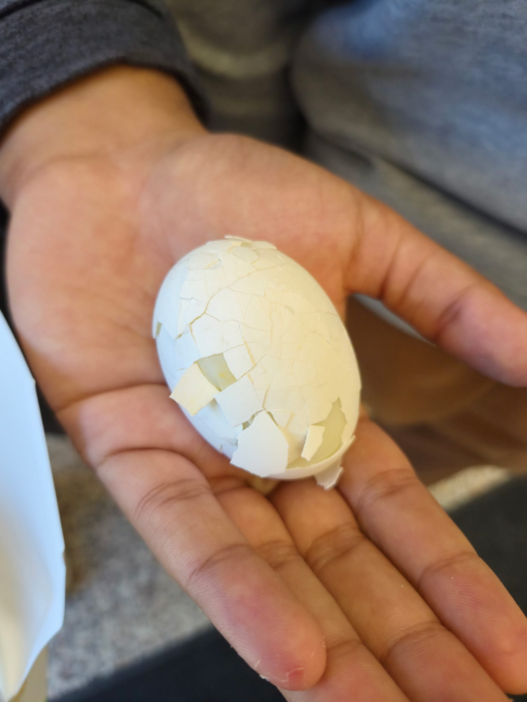
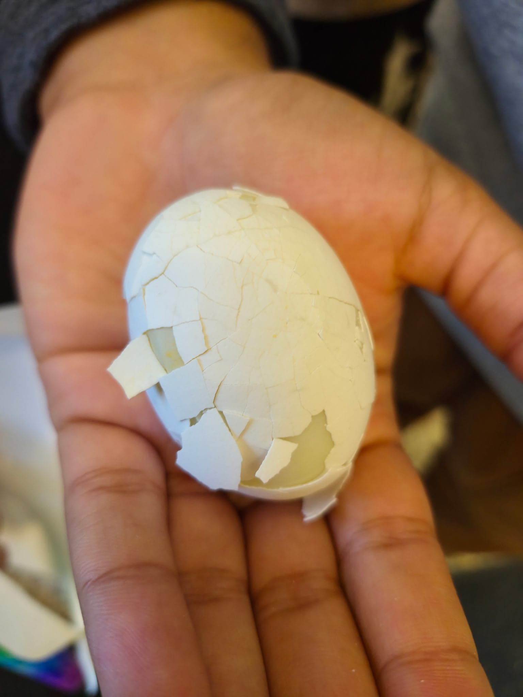
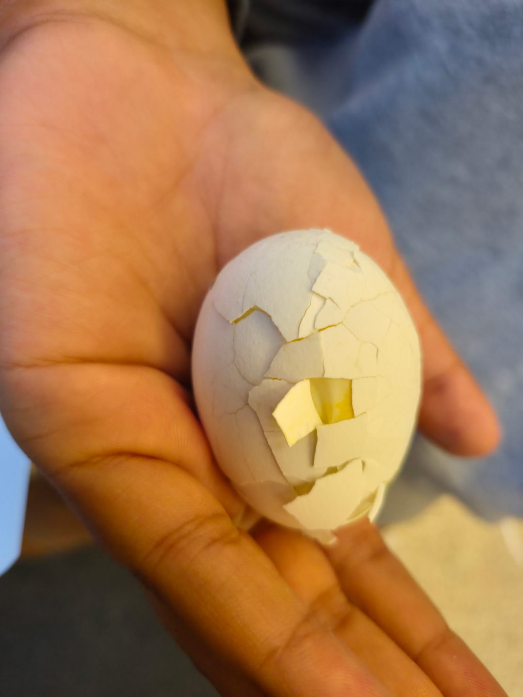

05 / Evaluation
Rated twice: the prototype, then the final
A design is a hypothesis until it has fallen off something.
Both builds were dropped off the same balcony and both eggs came back cracked — but not for the same reason.
Both verdicts are below, with the video behind each one.
05A / evaluation of prototype
Evaluation of prototype
Build 01, judged honestly.
It failed — and these are the four things we took out of it before starting again.
what happened — drop recording
prototype drop · 00:14assets/media/prototype-drop.mp4
The prototype drop, filmed from the landing side.
Watch the canopy on the way down — it stays shut, so the shell reaches the ground at close to full speed.
| Review point | Findings |
|---|---|
| What worked |
|
| What didn't work |
|
| What we can improve |
|
| What we learned |
|
| Verdict |
idea failed Prototype retired, then rebuilt from scratch around a sealed shell. |
the result — the egg after landing
three angles, minutes after impact



One egg, three angles, minutes after landing.
The damage sits in a single patch where the shell met the ground, and the plates of shell around it are loose rather than crushed.
Nothing held the egg still, so it slid inside the open box and took the whole hit itself — which is the failure the review table above is about.
05B / evaluation of final
Evaluation of final
Build 02, judged the same way: same balcony, same egg, same checklist.
The package did nearly everything it was designed to do — and the egg still did not survive.
what happened — drop recording
final drop · 00:40assets/media/final-drop.mp4
The final drop, filmed from the top of the stairwell.
The canopy keeps the fall slow enough to follow all the way down, the shell lands in one piece — and the egg is cracked when it comes out.
| Review point | Findings |
|---|---|
| What worked |
|
| What didn't work |
|
| What we can improve |
|
| What we learned |
|
| Verdict |
idea failed It held together and still lost the egg — the package is sound, the cushioning is not. |
> audit
Did we meet the criteria?
Every criterion from the Problem stage, checked against the design feature that answers it.
Three of the four held up.
The first one is the whole point of the challenge, and it is the one we missed.
| Criterion | Met? | Evidence / design feature |
|---|---|---|
| The egg survives with no cracks or leaks | no | The canopy slowed the fall and the shell survived it, but the impact still reached the egg — cracked in both drops. |
| The device stays in one piece after landing | yes | Every taped seam held in both drops. The shell dented on landing but never came apart. |
| Only the provided materials were used | yes | Everything came from the supplied kit. |
| Built within the time and size limits | yes | A simple build kept us on schedule. |
> interactive
Drop simulator
Run the trial yourself.
An unprotected egg arrives at full speed and stops almost instantly, which is exactly the case the maths says fails.
Our device arrives slowly and has a shell that gives way, which spreads the impact out.
The model says the device survives; the two drops say the egg cracked anyway — so read this as an estimate of the physics, not a record of what happened.
ready — arm the rig and press DROP
payload
drop height
1.50 m
telemetry
- Impact speed
- —
- Peak force
- —
- Fall time
- —
- Verdict
- STANDBY
end of review
Two builds, two cracked eggs.